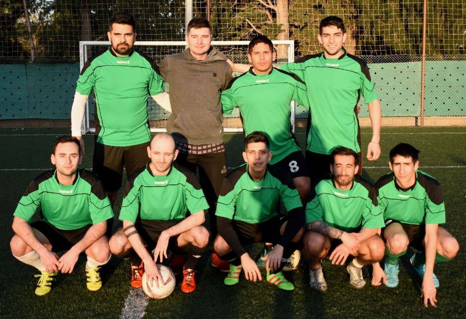
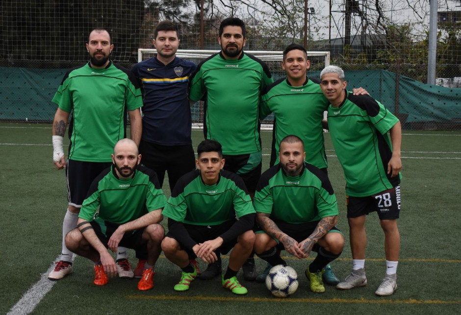

LE TOMO EL GUSTITO
Bubba vs Presagio - 29/08/2022
Resumen de la fecha
PURA MATEMATICAS - Una 8º Fecha parcial pero no por eso menos interesante se jugó en este durísimo torneo de la Primera División.La nota la volvió a dar EL FURGON, que de colista no tiene nada...mas bien es un tren bala que se lleva puesto a todo lo que se le cruza por delante.Es cierto que se cruzó con el otro extremo de la tabla y la diferencia se reflejó tanto en la tabla como en la cancha: 13 a 1.Difícil comentar cuando la disparidad es tan elocuente, pero lo cierto es que uno piensa en alzar la copa el mes que viene y el otro a duras penas mantener la categoría.iNVICTUS pese a no jugar mantuvo la posición de escolta y de esta manera llega relajado al choque ante el líder en su última oportunidad de arrimarlo.FECHA LIBRE y TRABU, con la cocarda de haberles mostrado que es la derrota al poderosísimo equipo de Julito, reiteraron triunfos y ya se aseguraron el pasaje a Octavos.Los rojos del Manchester le ganaron ajustadamente a JULIO por 2-1 y si bien los de Darío tienen un par de pendientes, lo cierto es que si no empieza a sumar se le va a complicar en el sprint final mientras que TRABU derrotó en un mal partido a CHOYA por 2-0, pero así el mejor equipo de Belgrano (para cuando la bandera con este slogan ?), hizo lo que debía hacer y nuevamente peleará por el título.Y el campeón...en qué anda ?. Volvió al triunfo, es verdad ante el irregular REAL DOSIVI (capaz de ser el único que le ganó a los del Capi y perder por ejemplo con Humilde) por 4-2 y como un Formula 1 despistado volvió al circuito para asegurarse con un triunfo mas la clasificación a Octavos.El grupo 2 se jugó a medias, pero PSGEDES derrotó por la mínima al equipo de la cascada y tambien estarán en Octavos en un partido que no recordará nadie mientras que BUBBA GUMP fue un festival de goles aplastando a PRESAGIO por 11 a 1 en otra de las goleadas destacadas y por último INTERNACIONAL apenas le hizo un gol y de penal a CHALA TECNICA, equipo que ya está mentalizado en la Permanencia mientras que los azules sueñan con quedar adentro de los play-offs.Se viene la antepenúltima con choques durísimos y esto arderá fecha a fecha al estar en tiempo de definiciones.
PELIGRO INMINENTE
Bubba vs Franco Canadiense - 15/8/2022
Resumen de la fecha
LA PILCHA INSPIRADORA - Una mitad de eliminatoria que lamentablemente tuvo muchos partidos postergados y que descompaginó bastante las tablas y que aun no se puede tener una perspectiva sobre lo que está ocurriendo en esta Primera División de altísimo nivel. Como será así que EL FURGON fecha a fecha se lleva el protagonismo por todo lo que está significando en la Liga y en su gran prueba de fuego demolió literalmente al campeón CHAMBETA, que como tambien venimos marcado no está mostrando la solidez del Apertura y esta inestabilidad lo está alejando de los primeros lugares insólitamente. Con un juego asociado que roza la perfección el equipo de El Capi goleó 5-0, recuperó la punta y para muchos costará bajarlos de ese lugar que le sienta tan bien. Encima todos juegan para los ferroviarios porque FECHA LIBRE que venía de cerca arrimado, quedó lejos al empatar 2-2 con el colista BOLSOS perdiendo la posibiidad de quedarse en soledad en la posición de escolta ya que el puntero hasta el momento INVICTUS postergó por el finde largo su choque ante CHOYA. REAL DOSIVI hizo bien los deberes y despachó a AKD por 2-0 en un partido bastante parejo en el que el tiburón aprovechó las ocasiones y ahí estuvo la diferencia a la hora de sumar. De esta manera los de Mati (que no estuvo) mantiene una irregularidad llamativa que lo hace navegar por la mitad de la tabla mientras que los colombianos solo piensan en no descender a esta altura. HUMILDE viene creciendo...silencioso pero en forma efectiva. Le pegó otra dura cachetada al presente incierto de TRABU y con el 2-0 los de Maxi se ilusionan puesto que le ganaron a un equipo que llegó al 5º puesto en el Apertura mostrando que es de los mejores pero está repitiendo un mal comienzo como el Apertura y de pensar en llevarse la zona nuevamente va a lidiar con la clasificación hasta las últimas jornadas. En el Grupo 2 por su parte, toda la alegría estaba centrada en el estreno de pilcha de PSGEDES, y mejor imposible porque en una actuación mas que soberbia pulverizó a NIUPI por 11-0 en un partido sin equivalencias que sigue reafirmando fecha a fecha que está para grandes ilusiones en su primera incursión oficial en la Liga. BUBBA GUMP por su parte sigue aprovechándose de los suplentes de FRANCO CANADIENSE y el 5-2 no sorprendió a nadie dejando al verde en una expectante tercera ubicación junto a los carniceros que postergaron. Solo EL FURGON oficialmente ya está en Octavos y en la próxima estación empezará a espiar quienes lo acompañarán en unos cruces que se vienen picantes-picantes.